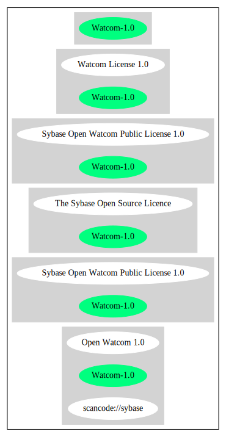

Key |
Value |
|---|---|
Fullname |
Sybase Open Watcom Public License 1.0 |
Shortname |
Watcom-1.0 |
Rating |
Unknown, probably Attention or Stop or No-Go |
Other Names:
scancode://sybase
Open Watcom 1.0
The Sybase Open Source Licence
↑“Is OSI Approved” (source: SPDX)
↓“Google Classification is CANNOT_BE_USED "Code released under the Sybase Open Watcom Public License version 1.0 cannot be used at Google. Provision 12.1\169 terminates the license if any patent litigation is filed against Sybase or any contributor, including cross claims and counterclaims, without limiting the scope of this provision to patent litigation concerning the specific software being licensed. This provision goes too far in restricting the exercise of Google\8217s patent rights and is therefore prohibited at Google."” (source: Google OSS Policy)
“Per SPDX.org, this license is OSI certified” (source: Scancode)
Homepage: http://opensource.org/licenses/sybase.php
OSI Page: https://opensource.org/licenses/Watcom-1.0
SPDX: http://spdx.org/licenses/Watcom-1.0.json
http://www.opensource.org/licenses/Watcom-1.0
USE OF THE SYBASE OPEN WATCOM SOFTWARE DESCRIBED BELOW ("SOFTWARE") IS
SUBJECT TO THE TERMS AND CONDITIONS SET FORTH IN THE SYBASE OPEN WATCOM
PUBLIC LICENSE SET FORTH BELOW ("LICENSE"). YOU MAY NOT USE THE SOFTWARE
IN ANY MANNER UNLESS YOU ACCEPT THE TERMS AND CONDITIONS OF THE LICENSE.
YOU INDICATE YOUR ACCEPTANCE BY IN ANY MANNER USING (INCLUDING WITHOUT
LIMITATION BY REPRODUCING, MODIFYING OR DISTRIBUTING) THE SOFTWARE. IF YOU
DO NOT ACCEPT ALL OF THE TERMS AND CONDITIONS OF THE LICENSE, DO NOT USE
THE SOFTWARE IN ANY MANNER.
Sybase Open Watcom Public License version 1.0
1. General; Definitions. This License applies only to the following
software programs: the open source versions of Sybase's Watcom C/C++ and
Fortran compiler products ("Software"), which are modified versions of,
with significant changes from, the last versions made commercially
available by Sybase. As used in this License:
1.1 "Applicable Patent Rights" mean: (a) in the case where Sybase is the
grantor of rights, (i) claims of patents that are now or hereafter
acquired, owned by or assigned to Sybase and (ii) that cover subject matter
contained in the Original Code, but only to the extent necessary to use,
reproduce and/or distribute the Original Code without infringement; and (b)
in the case where You are the grantor of rights, (i) claims of patents that
are now or hereafter acquired, owned by or assigned to You and (ii) that
cover subject matter in Your Modifications, taken alone or in combination
with Original Code.
1.2 "Contributor" means any person or entity that creates or contributes to
the creation of Modifications.
1.3 "Covered Code" means the Original Code, Modifications, the combination
of Original Code and any Modifications, and/or any respective portions
thereof.
1.4 "Deploy" means to use, sublicense or distribute Covered Code other than
for Your internal research and development (R&D) and/or Personal Use, and
includes without limitation, any and all internal use or distribution of
Covered Code within Your business or organization except for R&D use and/or
Personal Use, as well as direct or indirect sublicensing or distribution of
Covered Code by You to any third party in any form or manner.
1.5 "Larger Work" means a work which combines Covered Code or portions thereof
with code not governed by the terms of this License.
1.6 "Modifications" mean any addition to, deletion from, and/or change to,
the substance and/or structure of the Original Code, any previous
Modifications, the combination of Original Code and any previous
Modifications, and/or any respective portions thereof. When code is
released as a series of files, a Modification is: (a) any addition to or
deletion from the contents of a file containing Covered Code;
and/or (b)
any new file or other representation of computer program statements that
contains any part of Covered Code.
1.7 "Original Code" means (a) the Source Code of a program or other work
as originally made available by Sybase under this License, including the
Source Code of any updates or upgrades to such programs or works made
available by Sybase under this License, and that has been expressly
identified by Sybase as such in the header file(s) of such work; and (b)
the object code compiled from such Source Code and originally made
available by Sybase under this License.
1.8 "Personal Use" means use of Covered Code by an individual solely for
his or her personal, private and non-commercial purposes. An individual's
use of Covered Code in his or her capacity as an officer, employee, member,
independent contractor or agent of a corporation, business or organization
(commercial or non-commercial) does not qualify as Personal Use.
1.9 "Source Code" means the human readable form of a program or other work
that is suitable for making modifications to it, including all modules it
contains, plus any associated interface definition files, scripts used to
control compilation and installation of an executable (object code).
1.10 "You" or "Your" means an individual or a legal entity exercising
rights under this License. For legal entities, "You" or "Your" includes
any entity which controls, is controlled by, or is under common control
with, You, where "control" means (a) the power, direct or indirect, to
cause the direction or management of such entity, whether by contract or
otherwise, or (b) ownership of fifty percent (50%) or more of the
outstanding shares or beneficial ownership of such entity.
2. Permitted Uses; Conditions & Restrictions.Subject to the terms and
conditions of this License, Sybase hereby grants You, effective on the
date You accept this License and download the Original Code, a world-wide,
royalty-free, non-exclusive license, to the extent of Sybase's Applicable
Patent Rights and copyrights covering the Original Code, to do the
following:
2.1 You may use, reproduce, display, perform, modify and distribute
Original Code, with or without Modifications, solely for Your internal
research and development and/or Personal Use, provided that in each
instance:
(a) You must retain and reproduce in all copies of Original Code the
copyright and other proprietary notices and disclaimers of Sybase as they
appear in the Original Code, and keep intact all notices in the Original
Code that refer to this License; and
(b) You must retain and reproduce a copy of this License with every copy
of Source Code of Covered Code and documentation You distribute, and You
may not offer or impose any terms on such Source Code that alter or
restrict this License or the recipients' rights hereunder, except as
permitted under Section 6.
(c) Whenever reasonably feasible you should include the copy of this
License in a click-wrap format, which requires affirmative acceptance by
clicking on an "I accept" button or similar mechanism. If a click-wrap
format is not included, you must include a statement that any use
(including without limitation reproduction, modification or distribution)
of the Software, and any other affirmative act that you define, constitutes
acceptance of the License, and instructing the user not to use the Covered
Code in any manner if the user does not accept all of the terms and
conditions of the License.
2.2 You may use, reproduce, display, perform, modify and Deploy Covered Code,
provided that in each instance:
(a) You must satisfy all the conditions of Section 2.1 with respect to the
Source Code of the Covered Code;
(b) You must duplicate, to the extent it does not already exist, the notice
in Exhibit A in each file of the Source Code of all Your Modifications, and
cause the modified files to carry prominent notices stating that You
changed the files and the date of any change;
(c) You must make Source Code of all Your Deployed Modifications publicly
available under the terms of this License, including the license grants
set forth in Section 3 below, for as long as you Deploy the Covered Code
or twelve (12) months from the date of initial Deployment, whichever is
longer. You should preferably distribute the Source Code of Your Deployed
Modifications electronically (e.g. download from a web site);
(d) if You Deploy Covered Code in object code, executable form only, You
must include a prominent notice, in the code itself as well as in related
documentation, stating that Source Code of the Covered Code is available
under the terms of this License with information on how and where to
obtain such Source Code; and
(e) the object code form of the Covered Code may be distributed under Your
own license agreement, provided that such license agreement contains terms
no less protective of Sybase and each Contributor than the terms of this
License, and stating that any provisions which differ from this License
are offered by You alone and not by any other party.
2.3 You expressly acknowledge and agree that although Sybase and each
Contributor grants the licenses to their respective portions of the Covered
Code set forth herein, no assurances are provided by Sybase or any
Contributor that the Covered Code does not infringe the patent or other
intellectual property rights of any other entity. Sybase and each
Contributor disclaim any liability to You for claims brought by any other
entity based on infringement of intellectual property rights or otherwise.
As a condition to exercising the rights and licenses granted hereunder,
You hereby assume sole responsibility to secure any other intellectual
property rights needed, if any. For example, if a third party patent
license is required to allow You to distribute the Covered Code, it is
Your responsibility to acquire that license before distributing the Covered
Code.
3. Your Grants. In consideration of, and as a condition to, the licenses
granted to You under this License, You hereby grant to Sybase and all
third parties a non-exclusive, royalty-free license, under Your Applicable
Patent Rights and other intellectual property rights (other than patent)
owned or controlled by You, to use, reproduce, display, perform, modify,
distribute and Deploy Your Modifications of the same scope and extent as
Sybase's licenses under Sections 2.1 and 2.2.
4. Larger Works. You may create a Larger Work by combining Covered Code
with other code not governed by the terms of this License and distribute
the Larger Work as a single product. In each such instance, You must make
sure the requirements of this License are fulfilled for the Covered Code
or any portion thereof.
5. Limitations on Patent License. Except as expressly stated in Section 2,
no other patent rights, express or implied, are granted by Sybase herein.
Modifications and/or Larger Works may require additional patent licenses
from Sybase which Sybase may grant in its sole discretion.
6. Additional Terms. You may choose to offer, and to charge a fee for,
warranty, support, indemnity or liability obligations and/or other rights
consistent with this License ("Additional Terms") to one or more recipients
of Covered Code. However, You may do so only on Your own behalf and as
Your sole responsibility, and not on behalf of Sybase or any Contributor.
You must obtain the recipient's agreement that any such Additional Terms
are offered by You alone, and You hereby agree to indemnify, defend and
hold Sybase and every Contributor harmless for any liability incurred by
or claims asserted against Sybase or such Contributor by reason of any
such Additional Terms.
7. Versions of the License. Sybase may publish revised and/or new versions
of this License from time to time. Each version will be given a
distinguishing version number. Once Original Code has been published under
a particular version of this License, You may continue to use it under the
terms of that version. You may also choose to use such Original Code under
the terms of any subsequent version of this License published by Sybase. No
one other than Sybase has the right to modify the terms applicable to
Covered Code created under this License.
8. NO WARRANTY OR SUPPORT. The Covered Code may contain in whole or in part
pre-release, untested, or not fully tested works. The Covered Code may
contain errors that could cause failures or loss of data, and may be
incomplete or contain inaccuracies. You expressly acknowledge and agree that
use of the Covered Code, or any portion thereof, is at Your sole and entire
risk. THE COVERED CODE IS PROVIDED "AS IS" AND WITHOUT WARRANTY, UPGRADES
OR SUPPORT OF ANY KIND AND SYBASE AND SYBASE'S LICENSOR(S) (COLLECTIVELY
REFERRED TO AS "SYBASE" FOR THE PURPOSES OF SECTIONS 8 AND 9) AND ALL
CONTRIBUTORS EXPRESSLY DISCLAIM ALL WARRANTIES AND/OR CONDITIONS, EXPRESS
OR IMPLIED, INCLUDING, BUT NOT LIMITED TO, THE IMPLIED WARRANTIES AND/OR
CONDITIONS OF MERCHANTABILITY, OF SATISFACTORY QUALITY, OF FITNESS FOR A
PARTICULAR PURPOSE, OF ACCURACY, OF QUIET ENJOYMENT, AND NONINFRINGEMENT
OF THIRD PARTY RIGHTS. SYBASE AND EACH CONTRIBUTOR DOES NOT WARRANT
AGAINST INTERFERENCE WITH YOUR ENJOYMENT OF THE COVERED CODE, THAT THE
FUNCTIONS CONTAINED IN THE COVERED CODE WILL MEET YOUR REQUIREMENTS, THAT
THE OPERATION OF THE COVERED CODE WILL BE UNINTERRUPTED OR ERROR-FREE, OR
THAT DEFECTS IN THE COVERED CODE WILL BE CORRECTED. NO ORAL OR WRITTEN
INFORMATION OR ADVICE GIVEN BY SYBASE, A SYBASE AUTHORIZED REPRESENTATIVE
OR ANY CONTRIBUTOR SHALL CREATE A WARRANTY. You acknowledge that the
Covered Code is not intended for use in the operation of nuclear facilities,
aircraft navigation, communication systems, or air traffic control
machines in which case the failure of the Covered Code could lead to death,
personal injury, or severe physical or environmental damage.
9. LIMITATION OF LIABILITY. TO THE EXTENT NOT PROHIBITED BY LAW, IN NO
EVENT SHALL SYBASE OR ANY CONTRIBUTOR BE LIABLE FOR ANY DIRECT, INCIDENTAL,
SPECIAL, INDIRECT, CONSEQUENTIAL OR OTHER DAMAGES OF ANY KIND ARISING OUT
OF OR RELATING TO THIS LICENSE OR YOUR USE OR INABILITY TO USE THE COVERED
CODE, OR ANY PORTION THEREOF, WHETHER UNDER A THEORY OF CONTRACT, WARRANTY,
TORT (INCLUDING NEGLIGENCE), PRODUCTS LIABILITY OR OTHERWISE, EVEN IF
SYBASE OR SUCH CONTRIBUTOR HAS BEEN ADVISED OF THE POSSIBILITY OF SUCH
DAMAGES, AND NOTWITHSTANDING THE FAILURE OF ESSENTIAL PURPOSE OF ANY REMEDY.
SOME JURISDICTIONS DO NOT ALLOW THE LIMITATION OF LIABILITY OF INCIDENTAL
OR CONSEQUENTIAL OR OTHER DAMAGES OF ANY KIND, SO THIS LIMITATION MAY NOT
APPLY TO YOU. In no event shall Sybase's or any Contributor's total
liability to You for all damages (other than as may be required by
applicable law) under this License exceed the amount of five hundred
dollars ($500.00).
10. Trademarks. This License does not grant any rights to use the
trademarks or trade names "Sybase" or any other trademarks or trade names
belonging to Sybase (collectively "Sybase Marks") or to any trademark or
trade name belonging to any Contributor("Contributor Marks"). No Sybase
Marks or Contributor Marks may be used to endorse or promote products
derived from the Original Code or Covered Code other than with the prior
written consent of Sybase or the Contributor, as applicable.
11. Ownership. Subject to the licenses granted under this License, each Contributor
retains all rights, title and interest in and to any Modifications made by such
Contributor. Sybase retains all rights, title and interest in and to the
Original Code and any Modifications made by or on behalf of Sybase ("Sybase
Modifications"), and such Sybase Modifications will not be automatically
subject to this License. Sybase may, at its sole discretion, choose to
license such Sybase Modifications under this License, or on different terms
from those contained in this License or may choose not to license them at
all.
12. Termination.
12.1 Termination. This License and the rights granted hereunder will
terminate:
(a) automatically without notice if You fail to comply with any term(s) of
this License and fail to cure such breach within 30 days of becoming
aware of such breach;
(b) immediately in the event of the circumstances described in Section
13.5(b); or
(c) automatically without notice if You, at any time during the term of
this License, commence an action for patent infringement (including as a
cross claim or counterclaim) against Sybase or any Contributor.
12.2 Effect of Termination. Upon termination, You agree to immediately
stop any further use, reproduction, modification, sublicensing and
distribution of the Covered Code and to destroy all copies of the Covered
Code that are in your possession or control. All sublicenses to the Covered
Code that have been properly granted prior to termination shall survive any
termination of this License. Provisions which, by their nature, should
remain in effect beyond the termination of this License shall survive,
including but not limited to Sections 3, 5, 8, 9, 10, 11, 12.2 and 13. No
party will be liable to any other for compensation, indemnity or damages
of any sort solely as a result of terminating this License in accordance
with its terms, and termination of this License will be without prejudice
to any other right or remedy of any party.
13. Miscellaneous.
13.1 Government End Users. The Covered Code is a "commercial item" as
defined in FAR 2.101. Government software and technical data rights in the
Covered Code include only those rights customarily provided to the public
as defined in this License. This customary commercial license in technical
data and software is provided in accordance with FAR 12.211 (Technical
Data) and 12.212 (Computer Software) and, for Department of Defense
purchases, DFAR 252.227-7015 (Technical Data -- Commercial Items) and
227.7202-3 (Rights in Commercial Computer Software or Computer Software
Documentation). Accordingly, all U.S. Government End Users acquire Covered
Code with only those rights set forth herein.
13.2 Relationship of Parties. This License will not be construed as
creating an agency, partnership, joint venture or any other form of legal
association between or among you, Sybase or any Contributor, and You will
not represent to the contrary, whether expressly, by implication,
appearance or otherwise.
13.3 Independent Development. Nothing in this License will impair Sybase's
or any Contributor's right to acquire, license, develop, have others develop
for it, market and/or distribute technology or products that perform the
same or similar functions as, or otherwise compete with, Modifications,
Larger Works, technology or products that You may develop, produce, market
or distribute.
13.4 Waiver; Construction. Failure by Sybase or any Contributor to enforce
any provision of this License will not be deemed a waiver of future
enforcement of that or any other provision. Any law or regulation which
provides that the language of a contract shall be construed against the
drafter will not apply to this License.
13.5 Severability. (a) If for any reason a court of competent jurisdiction
finds any provision of this License, or portion thereof, to be
unenforceable, that provision of the License will be enforced to the maximum
extent permissible so as to effect the economic benefits and intent of the
parties, and the remainder of this License will continue in full force and
effect. (b) Notwithstanding the foregoing, if applicable law prohibits or
restricts You from fully and/or specifically complying with Sections 2
and/or 3 or prevents the enforceability of either of those Sections, this
License will immediately terminate and You must immediately discontinue any
use of the Covered Code and destroy all copies of it that are in your
possession or control.
13.6 Dispute Resolution. Any litigation or other dispute resolution between
You and Sybase relating to this License shall take place in the Northern
District of California, and You and Sybase hereby consent to the personal
jurisdiction of, and venue in, the state and federal courts within that
District with respect to this License. The application of the United Nations
Convention on Contracts for the International Sale of Goods is expressly
excluded.
13.7 Entire Agreement; Governing Law. This License constitutes the entire
agreement between the parties with respect to the subject matter hereof.
This License shall be governed by the laws of the United States and the
State of California, except that body of California law concerning conflicts
of law. Where You are located in the province of Quebec, Canada, the following
clause applies: The parties hereby confirm that they have requested that this
License and all related documents be drafted in English. Les parties ont
exige que le present contrat et tous les documents connexes soient rediges
en anglais.
EXHIBIT A.
"Portions Copyright (c) 1983-2002 Sybase, Inc. All Rights Reserved. This file
contains Original Code and/or Modifications of Original Code as defined in and
that are subject to the Sybase Open Watcom Public License version 1.0 (the
'License'). You may not use this file except in compliance with the License.
BY USING THIS FILE YOU AGREE TO ALL TERMS AND CONDITIONS OF THE LICENSE. A
copy of the License is provided with the Original Code and Modifications, and
is also available at www.sybase.com/developer/opensource.
The Original Code and all software distributed under the License are
distributed on an 'AS IS' basis, WITHOUT WARRANTY OF ANY KIND, EITHER EXPRESS
OR IMPLIED, AND SYBASE AND ALL CONTRIBUTORS HEREBY DISCLAIM ALL SUCH
WARRANTIES, INCLUDING WITHOUT LIMITATION, ANY WARRANTIES OF MERCHANTABILITY,
FITNESS FOR A PARTICULAR PURPOSE, QUIET ENJOYMENT OR NON-INFRINGEMENT. Please
see the License for the specific language governing rights and limitations
under the License."{
"__impliedNames": [
"Watcom-1.0",
"Sybase Open Watcom Public License 1.0",
"scancode://sybase",
"Open Watcom 1.0",
"The Sybase Open Source Licence"
],
"__impliedId": "Watcom-1.0",
"__impliedComments": [
[
"Scancode",
[
"Per SPDX.org, this license is OSI certified"
]
]
],
"facts": {
"Open Knowledge International": {
"is_generic": null,
"status": "active",
"domain_software": true,
"url": "https://opensource.org/licenses/Watcom-1.0",
"maintainer": "",
"od_conformance": "not reviewed",
"_sourceURL": "https://github.com/okfn/licenses/blob/master/licenses.csv",
"domain_data": false,
"osd_conformance": "approved",
"id": "Watcom-1.0",
"title": "Sybase Open Watcom Public License 1.0",
"_implications": {
"__impliedNames": [
"Watcom-1.0",
"Sybase Open Watcom Public License 1.0"
],
"__impliedId": "Watcom-1.0",
"__impliedURLs": [
[
null,
"https://opensource.org/licenses/Watcom-1.0"
]
]
},
"domain_content": false
},
"SPDX": {
"isSPDXLicenseDeprecated": false,
"spdxFullName": "Sybase Open Watcom Public License 1.0",
"spdxDetailsURL": "http://spdx.org/licenses/Watcom-1.0.json",
"_sourceURL": "https://spdx.org/licenses/Watcom-1.0.html",
"spdxLicIsOSIApproved": true,
"spdxSeeAlso": [
"https://opensource.org/licenses/Watcom-1.0"
],
"_implications": {
"__impliedNames": [
"Watcom-1.0",
"Sybase Open Watcom Public License 1.0"
],
"__impliedId": "Watcom-1.0",
"__impliedJudgement": [
[
"SPDX",
{
"tag": "PositiveJudgement",
"contents": "Is OSI Approved"
}
]
],
"__isOsiApproved": true,
"__impliedURLs": [
[
"SPDX",
"http://spdx.org/licenses/Watcom-1.0.json"
],
[
null,
"https://opensource.org/licenses/Watcom-1.0"
]
]
},
"spdxLicenseId": "Watcom-1.0"
},
"Scancode": {
"otherUrls": [
"http://www.opensource.org/licenses/Watcom-1.0",
"https://opensource.org/licenses/Watcom-1.0"
],
"homepageUrl": "http://opensource.org/licenses/sybase.php",
"shortName": "Open Watcom 1.0",
"textUrls": null,
"text": "USE OF THE SYBASE OPEN WATCOM SOFTWARE DESCRIBED BELOW (\"SOFTWARE\") IS \nSUBJECT TO THE TERMS AND CONDITIONS SET FORTH IN THE SYBASE OPEN WATCOM \nPUBLIC LICENSE SET FORTH BELOW (\"LICENSE\"). YOU MAY NOT USE THE SOFTWARE \nIN ANY MANNER UNLESS YOU ACCEPT THE TERMS AND CONDITIONS OF THE LICENSE. \nYOU INDICATE YOUR ACCEPTANCE BY IN ANY MANNER USING (INCLUDING WITHOUT \nLIMITATION BY REPRODUCING, MODIFYING OR DISTRIBUTING) THE SOFTWARE. IF YOU \nDO NOT ACCEPT ALL OF THE TERMS AND CONDITIONS OF THE LICENSE, DO NOT USE \nTHE SOFTWARE IN ANY MANNER.\n\n\nSybase Open Watcom Public License version 1.0\n\n1. General; Definitions. This License applies only to the following \nsoftware programs: the open source versions of Sybase's Watcom C/C++ and \nFortran compiler products (\"Software\"), which are modified versions of, \nwith significant changes from, the last versions made commercially \navailable by Sybase. As used in this License:\n\n1.1 \"Applicable Patent Rights\" mean: (a) in the case where Sybase is the \ngrantor of rights, (i) claims of patents that are now or hereafter \nacquired, owned by or assigned to Sybase and (ii) that cover subject matter \ncontained in the Original Code, but only to the extent necessary to use, \nreproduce and/or distribute the Original Code without infringement; and (b) \nin the case where You are the grantor of rights, (i) claims of patents that \nare now or hereafter acquired, owned by or assigned to You and (ii) that \ncover subject matter in Your Modifications, taken alone or in combination \nwith Original Code.\n\n1.2 \"Contributor\" means any person or entity that creates or contributes to \nthe creation of Modifications.\n\n1.3 \"Covered Code\" means the Original Code, Modifications, the combination \nof Original Code and any Modifications, and/or any respective portions \nthereof.\n\n1.4 \"Deploy\" means to use, sublicense or distribute Covered Code other than \nfor Your internal research and development (R&D) and/or Personal Use, and \nincludes without limitation, any and all internal use or distribution of \nCovered Code within Your business or organization except for R&D use and/or \nPersonal Use, as well as direct or indirect sublicensing or distribution of \nCovered Code by You to any third party in any form or manner.\n\n1.5 \"Larger Work\" means a work which combines Covered Code or portions thereof\n with code not governed by the terms of this License.\n\n1.6 \"Modifications\" mean any addition to, deletion from, and/or change to, \nthe substance and/or structure of the Original Code, any previous \nModifications, the combination of Original Code and any previous \nModifications, and/or any respective portions thereof. When code is \nreleased as a series of files, a Modification is: (a) any addition to or \ndeletion from the contents of a file containing Covered Code; \nand/or (b) \nany new file or other representation of computer program statements that \ncontains any part of Covered Code.\n\n1.7 \"Original Code\" means (a) the Source Code of a program or other work \nas originally made available by Sybase under this License, including the \nSource Code of any updates or upgrades to such programs or works made \navailable by Sybase under this License, and that has been expressly \nidentified by Sybase as such in the header file(s) of such work; and (b) \nthe object code compiled from such Source Code and originally made \navailable by Sybase under this License.\n\n1.8 \"Personal Use\" means use of Covered Code by an individual solely for \nhis or her personal, private and non-commercial purposes. An individual's \nuse of Covered Code in his or her capacity as an officer, employee, member, \nindependent contractor or agent of a corporation, business or organization \n(commercial or non-commercial) does not qualify as Personal Use.\n\n1.9 \"Source Code\" means the human readable form of a program or other work \nthat is suitable for making modifications to it, including all modules it \ncontains, plus any associated interface definition files, scripts used to \ncontrol compilation and installation of an executable (object code).\n\n1.10 \"You\" or \"Your\" means an individual or a legal entity exercising \nrights under this License. For legal entities, \"You\" or \"Your\" includes \nany entity which controls, is controlled by, or is under common control \nwith, You, where \"control\" means (a) the power, direct or indirect, to\n cause the direction or management of such entity, whether by contract or \notherwise, or (b) ownership of fifty percent (50%) or more of the \noutstanding shares or beneficial ownership of such entity.\n\n2. Permitted Uses; Conditions & Restrictions.Subject to the terms and \nconditions of this License, Sybase hereby grants You, effective on the \ndate You accept this License and download the Original Code, a world-wide, \nroyalty-free, non-exclusive license, to the extent of Sybase's Applicable \nPatent Rights and copyrights covering the Original Code, to do the \nfollowing:\n\n2.1 You may use, reproduce, display, perform, modify and distribute \nOriginal Code, with or without Modifications, solely for Your internal \nresearch and development and/or Personal Use, provided that in each \ninstance:\n(a) You must retain and reproduce in all copies of Original Code the \ncopyright and other proprietary notices and disclaimers of Sybase as they \nappear in the Original Code, and keep intact all notices in the Original \nCode that refer to this License; and\n(b) You must retain and reproduce a copy of this License with every copy \nof Source Code of Covered Code and documentation You distribute, and You \nmay not offer or impose any terms on such Source Code that alter or \nrestrict this License or the recipients' rights hereunder, except as \npermitted under Section 6.\n(c) Whenever reasonably feasible you should include the copy of this \nLicense in a click-wrap format, which requires affirmative acceptance by \nclicking on an \"I accept\" button or similar mechanism. If a click-wrap \nformat is not included, you must include a statement that any use \n(including without limitation reproduction, modification or distribution) \nof the Software, and any other affirmative act that you define, constitutes \nacceptance of the License, and instructing the user not to use the Covered \nCode in any manner if the user does not accept all of the terms and \nconditions of the License.\n\n2.2 You may use, reproduce, display, perform, modify and Deploy Covered Code, \nprovided that in each instance:\n(a) You must satisfy all the conditions of Section 2.1 with respect to the \nSource Code of the Covered Code;\n(b) You must duplicate, to the extent it does not already exist, the notice \nin Exhibit A in each file of the Source Code of all Your Modifications, and \ncause the modified files to carry prominent notices stating that You \nchanged the files and the date of any change;\n(c) You must make Source Code of all Your Deployed Modifications publicly \navailable under the terms of this License, including the license grants \nset forth in Section 3 below, for as long as you Deploy the Covered Code \nor twelve (12) months from the date of initial Deployment, whichever is \nlonger. You should preferably distribute the Source Code of Your Deployed \nModifications electronically (e.g. download from a web site);\n(d) if You Deploy Covered Code in object code, executable form only, You \nmust include a prominent notice, in the code itself as well as in related \ndocumentation, stating that Source Code of the Covered Code is available \nunder the terms of this License with information on how and where to \nobtain such Source Code; and\n(e) the object code form of the Covered Code may be distributed under Your \nown license agreement, provided that such license agreement contains terms \nno less protective of Sybase and each Contributor than the terms of this \nLicense, and stating that any provisions which differ from this License \nare offered by You alone and not by any other party.\n\n2.3 You expressly acknowledge and agree that although Sybase and each \nContributor grants the licenses to their respective portions of the Covered \nCode set forth herein, no assurances are provided by Sybase or any \nContributor that the Covered Code does not infringe the patent or other \nintellectual property rights of any other entity. Sybase and each \nContributor disclaim any liability to You for claims brought by any other \nentity based on infringement of intellectual property rights or otherwise. \nAs a condition to exercising the rights and licenses granted hereunder, \nYou hereby assume sole responsibility to secure any other intellectual \nproperty rights needed, if any. For example, if a third party patent \nlicense is required to allow You to distribute the Covered Code, it is \nYour responsibility to acquire that license before distributing the Covered \nCode.\n\n3. Your Grants. In consideration of, and as a condition to, the licenses \ngranted to You under this License, You hereby grant to Sybase and all \nthird parties a non-exclusive, royalty-free license, under Your Applicable \nPatent Rights and other intellectual property rights (other than patent) \nowned or controlled by You, to use, reproduce, display, perform, modify, \ndistribute and Deploy Your Modifications of the same scope and extent as \nSybase's licenses under Sections 2.1 and 2.2.\n\n4. Larger Works. You may create a Larger Work by combining Covered Code \nwith other code not governed by the terms of this License and distribute \nthe Larger Work as a single product. In each such instance, You must make \nsure the requirements of this License are fulfilled for the Covered Code \nor any portion thereof.\n\n5. Limitations on Patent License. Except as expressly stated in Section 2, \nno other patent rights, express or implied, are granted by Sybase herein. \nModifications and/or Larger Works may require additional patent licenses \nfrom Sybase which Sybase may grant in its sole discretion.\n\n6. Additional Terms. You may choose to offer, and to charge a fee for, \nwarranty, support, indemnity or liability obligations and/or other rights \nconsistent with this License (\"Additional Terms\") to one or more recipients \nof Covered Code. However, You may do so only on Your own behalf and as \nYour sole responsibility, and not on behalf of Sybase or any Contributor. \nYou must obtain the recipient's agreement that any such Additional Terms \nare offered by You alone, and You hereby agree to indemnify, defend and \nhold Sybase and every Contributor harmless for any liability incurred by \nor claims asserted against Sybase or such Contributor by reason of any \nsuch Additional Terms.\n\n7. Versions of the License. Sybase may publish revised and/or new versions \nof this License from time to time. Each version will be given a \ndistinguishing version number. Once Original Code has been published under \na particular version of this License, You may continue to use it under the \nterms of that version. You may also choose to use such Original Code under \nthe terms of any subsequent version of this License published by Sybase. No \none other than Sybase has the right to modify the terms applicable to \nCovered Code created under this License.\n\n8. NO WARRANTY OR SUPPORT. The Covered Code may contain in whole or in part \npre-release, untested, or not fully tested works. The Covered Code may \ncontain errors that could cause failures or loss of data, and may be \nincomplete or contain inaccuracies. You expressly acknowledge and agree that \nuse of the Covered Code, or any portion thereof, is at Your sole and entire \nrisk. THE COVERED CODE IS PROVIDED \"AS IS\" AND WITHOUT WARRANTY, UPGRADES \nOR SUPPORT OF ANY KIND AND SYBASE AND SYBASE'S LICENSOR(S) (COLLECTIVELY \nREFERRED TO AS \"SYBASE\" FOR THE PURPOSES OF SECTIONS 8 AND 9) AND ALL \nCONTRIBUTORS EXPRESSLY DISCLAIM ALL WARRANTIES AND/OR CONDITIONS, EXPRESS \nOR IMPLIED, INCLUDING, BUT NOT LIMITED TO, THE IMPLIED WARRANTIES AND/OR \nCONDITIONS OF MERCHANTABILITY, OF SATISFACTORY QUALITY, OF FITNESS FOR A \nPARTICULAR PURPOSE, OF ACCURACY, OF QUIET ENJOYMENT, AND NONINFRINGEMENT \nOF THIRD PARTY RIGHTS. SYBASE AND EACH CONTRIBUTOR DOES NOT WARRANT \nAGAINST INTERFERENCE WITH YOUR ENJOYMENT OF THE COVERED CODE, THAT THE \nFUNCTIONS CONTAINED IN THE COVERED CODE WILL MEET YOUR REQUIREMENTS, THAT \nTHE OPERATION OF THE COVERED CODE WILL BE UNINTERRUPTED OR ERROR-FREE, OR \nTHAT DEFECTS IN THE COVERED CODE WILL BE CORRECTED. NO ORAL OR WRITTEN \nINFORMATION OR ADVICE GIVEN BY SYBASE, A SYBASE AUTHORIZED REPRESENTATIVE \nOR ANY CONTRIBUTOR SHALL CREATE A WARRANTY. You acknowledge that the \nCovered Code is not intended for use in the operation of nuclear facilities, \naircraft navigation, communication systems, or air traffic control \nmachines in which case the failure of the Covered Code could lead to death,\n personal injury, or severe physical or environmental damage.\n\n9. LIMITATION OF LIABILITY. TO THE EXTENT NOT PROHIBITED BY LAW, IN NO \nEVENT SHALL SYBASE OR ANY CONTRIBUTOR BE LIABLE FOR ANY DIRECT, INCIDENTAL, \nSPECIAL, INDIRECT, CONSEQUENTIAL OR OTHER DAMAGES OF ANY KIND ARISING OUT \nOF OR RELATING TO THIS LICENSE OR YOUR USE OR INABILITY TO USE THE COVERED \nCODE, OR ANY PORTION THEREOF, WHETHER UNDER A THEORY OF CONTRACT, WARRANTY, \nTORT (INCLUDING NEGLIGENCE), PRODUCTS LIABILITY OR OTHERWISE, EVEN IF \nSYBASE OR SUCH CONTRIBUTOR HAS BEEN ADVISED OF THE POSSIBILITY OF SUCH \nDAMAGES, AND NOTWITHSTANDING THE FAILURE OF ESSENTIAL PURPOSE OF ANY REMEDY. \nSOME JURISDICTIONS DO NOT ALLOW THE LIMITATION OF LIABILITY OF INCIDENTAL \nOR CONSEQUENTIAL OR OTHER DAMAGES OF ANY KIND, SO THIS LIMITATION MAY NOT \nAPPLY TO YOU. In no event shall Sybase's or any Contributor's total \nliability to You for all damages (other than as may be required by \napplicable law) under this License exceed the amount of five hundred \ndollars ($500.00).\n\n10. Trademarks. This License does not grant any rights to use the \ntrademarks or trade names \"Sybase\" or any other trademarks or trade names \nbelonging to Sybase (collectively \"Sybase Marks\") or to any trademark or \ntrade name belonging to any Contributor(\"Contributor Marks\"). No Sybase \nMarks or Contributor Marks may be used to endorse or promote products \nderived from the Original Code or Covered Code other than with the prior \nwritten consent of Sybase or the Contributor, as applicable.\n\n11. Ownership. Subject to the licenses granted under this License, each Contributor \nretains all rights, title and interest in and to any Modifications made by such \nContributor. Sybase retains all rights, title and interest in and to the \nOriginal Code and any Modifications made by or on behalf of Sybase (\"Sybase \nModifications\"), and such Sybase Modifications will not be automatically \nsubject to this License. Sybase may, at its sole discretion, choose to \nlicense such Sybase Modifications under this License, or on different terms \nfrom those contained in this License or may choose not to license them at \nall.\n\n12. Termination.\n\n12.1 Termination. This License and the rights granted hereunder will \nterminate:\n(a) automatically without notice if You fail to comply with any term(s) of \nthis License and fail to cure such breach within 30 days of becoming \naware of such breach;\n(b) immediately in the event of the circumstances described in Section \n13.5(b); or\n(c) automatically without notice if You, at any time during the term of \nthis License, commence an action for patent infringement (including as a \ncross claim or counterclaim) against Sybase or any Contributor.\n\n12.2 Effect of Termination. Upon termination, You agree to immediately \nstop any further use, reproduction, modification, sublicensing and \ndistribution of the Covered Code and to destroy all copies of the Covered \nCode that are in your possession or control. All sublicenses to the Covered \nCode that have been properly granted prior to termination shall survive any \ntermination of this License. Provisions which, by their nature, should \nremain in effect beyond the termination of this License shall survive, \nincluding but not limited to Sections 3, 5, 8, 9, 10, 11, 12.2 and 13. No \nparty will be liable to any other for compensation, indemnity or damages \nof any sort solely as a result of terminating this License in accordance \nwith its terms, and termination of this License will be without prejudice \nto any other right or remedy of any party.\n\n13. Miscellaneous.\n\n13.1 Government End Users. The Covered Code is a \"commercial item\" as \ndefined in FAR 2.101. Government software and technical data rights in the \nCovered Code include only those rights customarily provided to the public \nas defined in this License. This customary commercial license in technical \ndata and software is provided in accordance with FAR 12.211 (Technical \nData) and 12.212 (Computer Software) and, for Department of Defense \npurchases, DFAR 252.227-7015 (Technical Data -- Commercial Items) and \n227.7202-3 (Rights in Commercial Computer Software or Computer Software \nDocumentation). Accordingly, all U.S. Government End Users acquire Covered \nCode with only those rights set forth herein.\n\n13.2 Relationship of Parties. This License will not be construed as \ncreating an agency, partnership, joint venture or any other form of legal \nassociation between or among you, Sybase or any Contributor, and You will \nnot represent to the contrary, whether expressly, by implication, \nappearance or otherwise.\n\n13.3 Independent Development. Nothing in this License will impair Sybase's \nor any Contributor's right to acquire, license, develop, have others develop \nfor it, market and/or distribute technology or products that perform the \nsame or similar functions as, or otherwise compete with, Modifications, \nLarger Works, technology or products that You may develop, produce, market \nor distribute.\n\n13.4 Waiver; Construction. Failure by Sybase or any Contributor to enforce \nany provision of this License will not be deemed a waiver of future \nenforcement of that or any other provision. Any law or regulation which \nprovides that the language of a contract shall be construed against the \ndrafter will not apply to this License.\n\n13.5 Severability. (a) If for any reason a court of competent jurisdiction \nfinds any provision of this License, or portion thereof, to be \nunenforceable, that provision of the License will be enforced to the maximum \nextent permissible so as to effect the economic benefits and intent of the \nparties, and the remainder of this License will continue in full force and \neffect. (b) Notwithstanding the foregoing, if applicable law prohibits or \nrestricts You from fully and/or specifically complying with Sections 2 \nand/or 3 or prevents the enforceability of either of those Sections, this \nLicense will immediately terminate and You must immediately discontinue any \nuse of the Covered Code and destroy all copies of it that are in your \npossession or control.\n\n13.6 Dispute Resolution. Any litigation or other dispute resolution between \nYou and Sybase relating to this License shall take place in the Northern \nDistrict of California, and You and Sybase hereby consent to the personal \njurisdiction of, and venue in, the state and federal courts within that \nDistrict with respect to this License. The application of the United Nations \nConvention on Contracts for the International Sale of Goods is expressly \nexcluded.\n\n13.7 Entire Agreement; Governing Law. This License constitutes the entire \nagreement between the parties with respect to the subject matter hereof. \nThis License shall be governed by the laws of the United States and the \nState of California, except that body of California law concerning conflicts \nof law. Where You are located in the province of Quebec, Canada, the following \nclause applies: The parties hereby confirm that they have requested that this \nLicense and all related documents be drafted in English. Les parties ont \nexige que le present contrat et tous les documents connexes soient rediges \nen anglais.\n\nEXHIBIT A.\n\"Portions Copyright (c) 1983-2002 Sybase, Inc. All Rights Reserved. This file \ncontains Original Code and/or Modifications of Original Code as defined in and \nthat are subject to the Sybase Open Watcom Public License version 1.0 (the \n'License'). You may not use this file except in compliance with the License. \nBY USING THIS FILE YOU AGREE TO ALL TERMS AND CONDITIONS OF THE LICENSE. A \ncopy of the License is provided with the Original Code and Modifications, and \nis also available at www.sybase.com/developer/opensource.\nThe Original Code and all software distributed under the License are \ndistributed on an 'AS IS' basis, WITHOUT WARRANTY OF ANY KIND, EITHER EXPRESS \nOR IMPLIED, AND SYBASE AND ALL CONTRIBUTORS HEREBY DISCLAIM ALL SUCH \nWARRANTIES, INCLUDING WITHOUT LIMITATION, ANY WARRANTIES OF MERCHANTABILITY, \nFITNESS FOR A PARTICULAR PURPOSE, QUIET ENJOYMENT OR NON-INFRINGEMENT. Please \nsee the License for the specific language governing rights and limitations \nunder the License.\"",
"category": "Proprietary Free",
"osiUrl": "http://opensource.org/licenses/sybase.php",
"owner": "Sybase, Inc. (an SAP subsidiary)",
"_sourceURL": "https://github.com/nexB/scancode-toolkit/blob/develop/src/licensedcode/data/licenses/sybase.yml",
"key": "sybase",
"name": "Sybase Open Watcom Public License v1.0",
"spdxId": "Watcom-1.0",
"notes": "Per SPDX.org, this license is OSI certified",
"_implications": {
"__impliedNames": [
"scancode://sybase",
"Open Watcom 1.0",
"Watcom-1.0"
],
"__impliedId": "Watcom-1.0",
"__impliedComments": [
[
"Scancode",
[
"Per SPDX.org, this license is OSI certified"
]
]
],
"__impliedText": "USE OF THE SYBASE OPEN WATCOM SOFTWARE DESCRIBED BELOW (\"SOFTWARE\") IS \nSUBJECT TO THE TERMS AND CONDITIONS SET FORTH IN THE SYBASE OPEN WATCOM \nPUBLIC LICENSE SET FORTH BELOW (\"LICENSE\"). YOU MAY NOT USE THE SOFTWARE \nIN ANY MANNER UNLESS YOU ACCEPT THE TERMS AND CONDITIONS OF THE LICENSE. \nYOU INDICATE YOUR ACCEPTANCE BY IN ANY MANNER USING (INCLUDING WITHOUT \nLIMITATION BY REPRODUCING, MODIFYING OR DISTRIBUTING) THE SOFTWARE. IF YOU \nDO NOT ACCEPT ALL OF THE TERMS AND CONDITIONS OF THE LICENSE, DO NOT USE \nTHE SOFTWARE IN ANY MANNER.\n\n\nSybase Open Watcom Public License version 1.0\n\n1. General; Definitions. This License applies only to the following \nsoftware programs: the open source versions of Sybase's Watcom C/C++ and \nFortran compiler products (\"Software\"), which are modified versions of, \nwith significant changes from, the last versions made commercially \navailable by Sybase. As used in this License:\n\n1.1 \"Applicable Patent Rights\" mean: (a) in the case where Sybase is the \ngrantor of rights, (i) claims of patents that are now or hereafter \nacquired, owned by or assigned to Sybase and (ii) that cover subject matter \ncontained in the Original Code, but only to the extent necessary to use, \nreproduce and/or distribute the Original Code without infringement; and (b) \nin the case where You are the grantor of rights, (i) claims of patents that \nare now or hereafter acquired, owned by or assigned to You and (ii) that \ncover subject matter in Your Modifications, taken alone or in combination \nwith Original Code.\n\n1.2 \"Contributor\" means any person or entity that creates or contributes to \nthe creation of Modifications.\n\n1.3 \"Covered Code\" means the Original Code, Modifications, the combination \nof Original Code and any Modifications, and/or any respective portions \nthereof.\n\n1.4 \"Deploy\" means to use, sublicense or distribute Covered Code other than \nfor Your internal research and development (R&D) and/or Personal Use, and \nincludes without limitation, any and all internal use or distribution of \nCovered Code within Your business or organization except for R&D use and/or \nPersonal Use, as well as direct or indirect sublicensing or distribution of \nCovered Code by You to any third party in any form or manner.\n\n1.5 \"Larger Work\" means a work which combines Covered Code or portions thereof\n with code not governed by the terms of this License.\n\n1.6 \"Modifications\" mean any addition to, deletion from, and/or change to, \nthe substance and/or structure of the Original Code, any previous \nModifications, the combination of Original Code and any previous \nModifications, and/or any respective portions thereof. When code is \nreleased as a series of files, a Modification is: (a) any addition to or \ndeletion from the contents of a file containing Covered Code; \nand/or (b) \nany new file or other representation of computer program statements that \ncontains any part of Covered Code.\n\n1.7 \"Original Code\" means (a) the Source Code of a program or other work \nas originally made available by Sybase under this License, including the \nSource Code of any updates or upgrades to such programs or works made \navailable by Sybase under this License, and that has been expressly \nidentified by Sybase as such in the header file(s) of such work; and (b) \nthe object code compiled from such Source Code and originally made \navailable by Sybase under this License.\n\n1.8 \"Personal Use\" means use of Covered Code by an individual solely for \nhis or her personal, private and non-commercial purposes. An individual's \nuse of Covered Code in his or her capacity as an officer, employee, member, \nindependent contractor or agent of a corporation, business or organization \n(commercial or non-commercial) does not qualify as Personal Use.\n\n1.9 \"Source Code\" means the human readable form of a program or other work \nthat is suitable for making modifications to it, including all modules it \ncontains, plus any associated interface definition files, scripts used to \ncontrol compilation and installation of an executable (object code).\n\n1.10 \"You\" or \"Your\" means an individual or a legal entity exercising \nrights under this License. For legal entities, \"You\" or \"Your\" includes \nany entity which controls, is controlled by, or is under common control \nwith, You, where \"control\" means (a) the power, direct or indirect, to\n cause the direction or management of such entity, whether by contract or \notherwise, or (b) ownership of fifty percent (50%) or more of the \noutstanding shares or beneficial ownership of such entity.\n\n2. Permitted Uses; Conditions & Restrictions.Subject to the terms and \nconditions of this License, Sybase hereby grants You, effective on the \ndate You accept this License and download the Original Code, a world-wide, \nroyalty-free, non-exclusive license, to the extent of Sybase's Applicable \nPatent Rights and copyrights covering the Original Code, to do the \nfollowing:\n\n2.1 You may use, reproduce, display, perform, modify and distribute \nOriginal Code, with or without Modifications, solely for Your internal \nresearch and development and/or Personal Use, provided that in each \ninstance:\n(a) You must retain and reproduce in all copies of Original Code the \ncopyright and other proprietary notices and disclaimers of Sybase as they \nappear in the Original Code, and keep intact all notices in the Original \nCode that refer to this License; and\n(b) You must retain and reproduce a copy of this License with every copy \nof Source Code of Covered Code and documentation You distribute, and You \nmay not offer or impose any terms on such Source Code that alter or \nrestrict this License or the recipients' rights hereunder, except as \npermitted under Section 6.\n(c) Whenever reasonably feasible you should include the copy of this \nLicense in a click-wrap format, which requires affirmative acceptance by \nclicking on an \"I accept\" button or similar mechanism. If a click-wrap \nformat is not included, you must include a statement that any use \n(including without limitation reproduction, modification or distribution) \nof the Software, and any other affirmative act that you define, constitutes \nacceptance of the License, and instructing the user not to use the Covered \nCode in any manner if the user does not accept all of the terms and \nconditions of the License.\n\n2.2 You may use, reproduce, display, perform, modify and Deploy Covered Code, \nprovided that in each instance:\n(a) You must satisfy all the conditions of Section 2.1 with respect to the \nSource Code of the Covered Code;\n(b) You must duplicate, to the extent it does not already exist, the notice \nin Exhibit A in each file of the Source Code of all Your Modifications, and \ncause the modified files to carry prominent notices stating that You \nchanged the files and the date of any change;\n(c) You must make Source Code of all Your Deployed Modifications publicly \navailable under the terms of this License, including the license grants \nset forth in Section 3 below, for as long as you Deploy the Covered Code \nor twelve (12) months from the date of initial Deployment, whichever is \nlonger. You should preferably distribute the Source Code of Your Deployed \nModifications electronically (e.g. download from a web site);\n(d) if You Deploy Covered Code in object code, executable form only, You \nmust include a prominent notice, in the code itself as well as in related \ndocumentation, stating that Source Code of the Covered Code is available \nunder the terms of this License with information on how and where to \nobtain such Source Code; and\n(e) the object code form of the Covered Code may be distributed under Your \nown license agreement, provided that such license agreement contains terms \nno less protective of Sybase and each Contributor than the terms of this \nLicense, and stating that any provisions which differ from this License \nare offered by You alone and not by any other party.\n\n2.3 You expressly acknowledge and agree that although Sybase and each \nContributor grants the licenses to their respective portions of the Covered \nCode set forth herein, no assurances are provided by Sybase or any \nContributor that the Covered Code does not infringe the patent or other \nintellectual property rights of any other entity. Sybase and each \nContributor disclaim any liability to You for claims brought by any other \nentity based on infringement of intellectual property rights or otherwise. \nAs a condition to exercising the rights and licenses granted hereunder, \nYou hereby assume sole responsibility to secure any other intellectual \nproperty rights needed, if any. For example, if a third party patent \nlicense is required to allow You to distribute the Covered Code, it is \nYour responsibility to acquire that license before distributing the Covered \nCode.\n\n3. Your Grants. In consideration of, and as a condition to, the licenses \ngranted to You under this License, You hereby grant to Sybase and all \nthird parties a non-exclusive, royalty-free license, under Your Applicable \nPatent Rights and other intellectual property rights (other than patent) \nowned or controlled by You, to use, reproduce, display, perform, modify, \ndistribute and Deploy Your Modifications of the same scope and extent as \nSybase's licenses under Sections 2.1 and 2.2.\n\n4. Larger Works. You may create a Larger Work by combining Covered Code \nwith other code not governed by the terms of this License and distribute \nthe Larger Work as a single product. In each such instance, You must make \nsure the requirements of this License are fulfilled for the Covered Code \nor any portion thereof.\n\n5. Limitations on Patent License. Except as expressly stated in Section 2, \nno other patent rights, express or implied, are granted by Sybase herein. \nModifications and/or Larger Works may require additional patent licenses \nfrom Sybase which Sybase may grant in its sole discretion.\n\n6. Additional Terms. You may choose to offer, and to charge a fee for, \nwarranty, support, indemnity or liability obligations and/or other rights \nconsistent with this License (\"Additional Terms\") to one or more recipients \nof Covered Code. However, You may do so only on Your own behalf and as \nYour sole responsibility, and not on behalf of Sybase or any Contributor. \nYou must obtain the recipient's agreement that any such Additional Terms \nare offered by You alone, and You hereby agree to indemnify, defend and \nhold Sybase and every Contributor harmless for any liability incurred by \nor claims asserted against Sybase or such Contributor by reason of any \nsuch Additional Terms.\n\n7. Versions of the License. Sybase may publish revised and/or new versions \nof this License from time to time. Each version will be given a \ndistinguishing version number. Once Original Code has been published under \na particular version of this License, You may continue to use it under the \nterms of that version. You may also choose to use such Original Code under \nthe terms of any subsequent version of this License published by Sybase. No \none other than Sybase has the right to modify the terms applicable to \nCovered Code created under this License.\n\n8. NO WARRANTY OR SUPPORT. The Covered Code may contain in whole or in part \npre-release, untested, or not fully tested works. The Covered Code may \ncontain errors that could cause failures or loss of data, and may be \nincomplete or contain inaccuracies. You expressly acknowledge and agree that \nuse of the Covered Code, or any portion thereof, is at Your sole and entire \nrisk. THE COVERED CODE IS PROVIDED \"AS IS\" AND WITHOUT WARRANTY, UPGRADES \nOR SUPPORT OF ANY KIND AND SYBASE AND SYBASE'S LICENSOR(S) (COLLECTIVELY \nREFERRED TO AS \"SYBASE\" FOR THE PURPOSES OF SECTIONS 8 AND 9) AND ALL \nCONTRIBUTORS EXPRESSLY DISCLAIM ALL WARRANTIES AND/OR CONDITIONS, EXPRESS \nOR IMPLIED, INCLUDING, BUT NOT LIMITED TO, THE IMPLIED WARRANTIES AND/OR \nCONDITIONS OF MERCHANTABILITY, OF SATISFACTORY QUALITY, OF FITNESS FOR A \nPARTICULAR PURPOSE, OF ACCURACY, OF QUIET ENJOYMENT, AND NONINFRINGEMENT \nOF THIRD PARTY RIGHTS. SYBASE AND EACH CONTRIBUTOR DOES NOT WARRANT \nAGAINST INTERFERENCE WITH YOUR ENJOYMENT OF THE COVERED CODE, THAT THE \nFUNCTIONS CONTAINED IN THE COVERED CODE WILL MEET YOUR REQUIREMENTS, THAT \nTHE OPERATION OF THE COVERED CODE WILL BE UNINTERRUPTED OR ERROR-FREE, OR \nTHAT DEFECTS IN THE COVERED CODE WILL BE CORRECTED. NO ORAL OR WRITTEN \nINFORMATION OR ADVICE GIVEN BY SYBASE, A SYBASE AUTHORIZED REPRESENTATIVE \nOR ANY CONTRIBUTOR SHALL CREATE A WARRANTY. You acknowledge that the \nCovered Code is not intended for use in the operation of nuclear facilities, \naircraft navigation, communication systems, or air traffic control \nmachines in which case the failure of the Covered Code could lead to death,\n personal injury, or severe physical or environmental damage.\n\n9. LIMITATION OF LIABILITY. TO THE EXTENT NOT PROHIBITED BY LAW, IN NO \nEVENT SHALL SYBASE OR ANY CONTRIBUTOR BE LIABLE FOR ANY DIRECT, INCIDENTAL, \nSPECIAL, INDIRECT, CONSEQUENTIAL OR OTHER DAMAGES OF ANY KIND ARISING OUT \nOF OR RELATING TO THIS LICENSE OR YOUR USE OR INABILITY TO USE THE COVERED \nCODE, OR ANY PORTION THEREOF, WHETHER UNDER A THEORY OF CONTRACT, WARRANTY, \nTORT (INCLUDING NEGLIGENCE), PRODUCTS LIABILITY OR OTHERWISE, EVEN IF \nSYBASE OR SUCH CONTRIBUTOR HAS BEEN ADVISED OF THE POSSIBILITY OF SUCH \nDAMAGES, AND NOTWITHSTANDING THE FAILURE OF ESSENTIAL PURPOSE OF ANY REMEDY. \nSOME JURISDICTIONS DO NOT ALLOW THE LIMITATION OF LIABILITY OF INCIDENTAL \nOR CONSEQUENTIAL OR OTHER DAMAGES OF ANY KIND, SO THIS LIMITATION MAY NOT \nAPPLY TO YOU. In no event shall Sybase's or any Contributor's total \nliability to You for all damages (other than as may be required by \napplicable law) under this License exceed the amount of five hundred \ndollars ($500.00).\n\n10. Trademarks. This License does not grant any rights to use the \ntrademarks or trade names \"Sybase\" or any other trademarks or trade names \nbelonging to Sybase (collectively \"Sybase Marks\") or to any trademark or \ntrade name belonging to any Contributor(\"Contributor Marks\"). No Sybase \nMarks or Contributor Marks may be used to endorse or promote products \nderived from the Original Code or Covered Code other than with the prior \nwritten consent of Sybase or the Contributor, as applicable.\n\n11. Ownership. Subject to the licenses granted under this License, each Contributor \nretains all rights, title and interest in and to any Modifications made by such \nContributor. Sybase retains all rights, title and interest in and to the \nOriginal Code and any Modifications made by or on behalf of Sybase (\"Sybase \nModifications\"), and such Sybase Modifications will not be automatically \nsubject to this License. Sybase may, at its sole discretion, choose to \nlicense such Sybase Modifications under this License, or on different terms \nfrom those contained in this License or may choose not to license them at \nall.\n\n12. Termination.\n\n12.1 Termination. This License and the rights granted hereunder will \nterminate:\n(a) automatically without notice if You fail to comply with any term(s) of \nthis License and fail to cure such breach within 30 days of becoming \naware of such breach;\n(b) immediately in the event of the circumstances described in Section \n13.5(b); or\n(c) automatically without notice if You, at any time during the term of \nthis License, commence an action for patent infringement (including as a \ncross claim or counterclaim) against Sybase or any Contributor.\n\n12.2 Effect of Termination. Upon termination, You agree to immediately \nstop any further use, reproduction, modification, sublicensing and \ndistribution of the Covered Code and to destroy all copies of the Covered \nCode that are in your possession or control. All sublicenses to the Covered \nCode that have been properly granted prior to termination shall survive any \ntermination of this License. Provisions which, by their nature, should \nremain in effect beyond the termination of this License shall survive, \nincluding but not limited to Sections 3, 5, 8, 9, 10, 11, 12.2 and 13. No \nparty will be liable to any other for compensation, indemnity or damages \nof any sort solely as a result of terminating this License in accordance \nwith its terms, and termination of this License will be without prejudice \nto any other right or remedy of any party.\n\n13. Miscellaneous.\n\n13.1 Government End Users. The Covered Code is a \"commercial item\" as \ndefined in FAR 2.101. Government software and technical data rights in the \nCovered Code include only those rights customarily provided to the public \nas defined in this License. This customary commercial license in technical \ndata and software is provided in accordance with FAR 12.211 (Technical \nData) and 12.212 (Computer Software) and, for Department of Defense \npurchases, DFAR 252.227-7015 (Technical Data -- Commercial Items) and \n227.7202-3 (Rights in Commercial Computer Software or Computer Software \nDocumentation). Accordingly, all U.S. Government End Users acquire Covered \nCode with only those rights set forth herein.\n\n13.2 Relationship of Parties. This License will not be construed as \ncreating an agency, partnership, joint venture or any other form of legal \nassociation between or among you, Sybase or any Contributor, and You will \nnot represent to the contrary, whether expressly, by implication, \nappearance or otherwise.\n\n13.3 Independent Development. Nothing in this License will impair Sybase's \nor any Contributor's right to acquire, license, develop, have others develop \nfor it, market and/or distribute technology or products that perform the \nsame or similar functions as, or otherwise compete with, Modifications, \nLarger Works, technology or products that You may develop, produce, market \nor distribute.\n\n13.4 Waiver; Construction. Failure by Sybase or any Contributor to enforce \nany provision of this License will not be deemed a waiver of future \nenforcement of that or any other provision. Any law or regulation which \nprovides that the language of a contract shall be construed against the \ndrafter will not apply to this License.\n\n13.5 Severability. (a) If for any reason a court of competent jurisdiction \nfinds any provision of this License, or portion thereof, to be \nunenforceable, that provision of the License will be enforced to the maximum \nextent permissible so as to effect the economic benefits and intent of the \nparties, and the remainder of this License will continue in full force and \neffect. (b) Notwithstanding the foregoing, if applicable law prohibits or \nrestricts You from fully and/or specifically complying with Sections 2 \nand/or 3 or prevents the enforceability of either of those Sections, this \nLicense will immediately terminate and You must immediately discontinue any \nuse of the Covered Code and destroy all copies of it that are in your \npossession or control.\n\n13.6 Dispute Resolution. Any litigation or other dispute resolution between \nYou and Sybase relating to this License shall take place in the Northern \nDistrict of California, and You and Sybase hereby consent to the personal \njurisdiction of, and venue in, the state and federal courts within that \nDistrict with respect to this License. The application of the United Nations \nConvention on Contracts for the International Sale of Goods is expressly \nexcluded.\n\n13.7 Entire Agreement; Governing Law. This License constitutes the entire \nagreement between the parties with respect to the subject matter hereof. \nThis License shall be governed by the laws of the United States and the \nState of California, except that body of California law concerning conflicts \nof law. Where You are located in the province of Quebec, Canada, the following \nclause applies: The parties hereby confirm that they have requested that this \nLicense and all related documents be drafted in English. Les parties ont \nexige que le present contrat et tous les documents connexes soient rediges \nen anglais.\n\nEXHIBIT A.\n\"Portions Copyright (c) 1983-2002 Sybase, Inc. All Rights Reserved. This file \ncontains Original Code and/or Modifications of Original Code as defined in and \nthat are subject to the Sybase Open Watcom Public License version 1.0 (the \n'License'). You may not use this file except in compliance with the License. \nBY USING THIS FILE YOU AGREE TO ALL TERMS AND CONDITIONS OF THE LICENSE. A \ncopy of the License is provided with the Original Code and Modifications, and \nis also available at www.sybase.com/developer/opensource.\nThe Original Code and all software distributed under the License are \ndistributed on an 'AS IS' basis, WITHOUT WARRANTY OF ANY KIND, EITHER EXPRESS \nOR IMPLIED, AND SYBASE AND ALL CONTRIBUTORS HEREBY DISCLAIM ALL SUCH \nWARRANTIES, INCLUDING WITHOUT LIMITATION, ANY WARRANTIES OF MERCHANTABILITY, \nFITNESS FOR A PARTICULAR PURPOSE, QUIET ENJOYMENT OR NON-INFRINGEMENT. Please \nsee the License for the specific language governing rights and limitations \nunder the License.\"",
"__impliedURLs": [
[
"Homepage",
"http://opensource.org/licenses/sybase.php"
],
[
"OSI Page",
"http://opensource.org/licenses/sybase.php"
],
[
null,
"http://www.opensource.org/licenses/Watcom-1.0"
],
[
null,
"https://opensource.org/licenses/Watcom-1.0"
]
]
}
},
"OpenChainPolicyTemplate": {
"isSaaSDeemed": "no",
"licenseType": "copyleft",
"freedomOrDeath": "no",
"typeCopyleft": "yes",
"_sourceURL": "https://github.com/OpenChain-Project/curriculum/raw/ddf1e879341adbd9b297cd67c5d5c16b2076540b/policy-template/Open%20Source%20Policy%20Template%20for%20OpenChain%20Specification%201.2.ods",
"name": "Sybase Open Watcom Public License 1.0 (Watcom-1.0)",
"commercialUse": true,
"spdxId": "Watcom-1.0",
"_implications": {
"__impliedNames": [
"Watcom-1.0"
]
}
},
"OpenSourceInitiative": {
"text": [
{
"url": "https://opensource.org/licenses/Watcom-1.0",
"title": "HTML",
"media_type": "text/html"
}
],
"identifiers": [
{
"identifier": "Watcom-1.0",
"scheme": "SPDX"
}
],
"superseded_by": null,
"_sourceURL": "https://opensource.org/licenses/",
"name": "The Sybase Open Source Licence",
"other_names": [],
"keywords": [
"discouraged",
"non-reusable",
"osi-approved"
],
"id": "Watcom-1.0",
"links": [
{
"note": "OSI Page",
"url": "https://opensource.org/licenses/Watcom-1.0"
}
],
"_implications": {
"__impliedNames": [
"Watcom-1.0",
"The Sybase Open Source Licence",
"Watcom-1.0"
],
"__impliedURLs": [
[
"OSI Page",
"https://opensource.org/licenses/Watcom-1.0"
]
]
}
},
"Google OSS Policy": {
"rating": "CANNOT_BE_USED",
"_sourceURL": "https://opensource.google.com/docs/thirdparty/licenses/",
"id": "Watcom-1.0",
"_implications": {
"__impliedNames": [
"Watcom-1.0"
],
"__impliedJudgement": [
[
"Google OSS Policy",
{
"tag": "NegativeJudgement",
"contents": "Google Classification is CANNOT_BE_USED \"Code released under the Sybase Open Watcom Public License version 1.0 cannot be used at Google. Provision 12.1\\169 terminates the license if any patent litigation is filed against Sybase or any contributor, including cross claims and counterclaims, without limiting the scope of this provision to patent litigation concerning the specific software being licensed. This provision goes too far in restricting the exercise of Google\\8217s patent rights and is therefore prohibited at Google.\""
}
]
]
},
"description": "Code released under the Sybase Open Watcom Public License version 1.0 cannot be used at Google. Provision 12.1© terminates the license if any patent litigation is filed against Sybase or any contributor, including cross claims and counterclaims, without limiting the scope of this provision to patent litigation concerning the specific software being licensed. This provision goes too far in restricting the exercise of Googleâs patent rights and is therefore prohibited at Google."
}
},
"__impliedJudgement": [
[
"Google OSS Policy",
{
"tag": "NegativeJudgement",
"contents": "Google Classification is CANNOT_BE_USED \"Code released under the Sybase Open Watcom Public License version 1.0 cannot be used at Google. Provision 12.1\\169 terminates the license if any patent litigation is filed against Sybase or any contributor, including cross claims and counterclaims, without limiting the scope of this provision to patent litigation concerning the specific software being licensed. This provision goes too far in restricting the exercise of Google\\8217s patent rights and is therefore prohibited at Google.\""
}
],
[
"SPDX",
{
"tag": "PositiveJudgement",
"contents": "Is OSI Approved"
}
]
],
"__isOsiApproved": true,
"__impliedText": "USE OF THE SYBASE OPEN WATCOM SOFTWARE DESCRIBED BELOW (\"SOFTWARE\") IS \nSUBJECT TO THE TERMS AND CONDITIONS SET FORTH IN THE SYBASE OPEN WATCOM \nPUBLIC LICENSE SET FORTH BELOW (\"LICENSE\"). YOU MAY NOT USE THE SOFTWARE \nIN ANY MANNER UNLESS YOU ACCEPT THE TERMS AND CONDITIONS OF THE LICENSE. \nYOU INDICATE YOUR ACCEPTANCE BY IN ANY MANNER USING (INCLUDING WITHOUT \nLIMITATION BY REPRODUCING, MODIFYING OR DISTRIBUTING) THE SOFTWARE. IF YOU \nDO NOT ACCEPT ALL OF THE TERMS AND CONDITIONS OF THE LICENSE, DO NOT USE \nTHE SOFTWARE IN ANY MANNER.\n\n\nSybase Open Watcom Public License version 1.0\n\n1. General; Definitions. This License applies only to the following \nsoftware programs: the open source versions of Sybase's Watcom C/C++ and \nFortran compiler products (\"Software\"), which are modified versions of, \nwith significant changes from, the last versions made commercially \navailable by Sybase. As used in this License:\n\n1.1 \"Applicable Patent Rights\" mean: (a) in the case where Sybase is the \ngrantor of rights, (i) claims of patents that are now or hereafter \nacquired, owned by or assigned to Sybase and (ii) that cover subject matter \ncontained in the Original Code, but only to the extent necessary to use, \nreproduce and/or distribute the Original Code without infringement; and (b) \nin the case where You are the grantor of rights, (i) claims of patents that \nare now or hereafter acquired, owned by or assigned to You and (ii) that \ncover subject matter in Your Modifications, taken alone or in combination \nwith Original Code.\n\n1.2 \"Contributor\" means any person or entity that creates or contributes to \nthe creation of Modifications.\n\n1.3 \"Covered Code\" means the Original Code, Modifications, the combination \nof Original Code and any Modifications, and/or any respective portions \nthereof.\n\n1.4 \"Deploy\" means to use, sublicense or distribute Covered Code other than \nfor Your internal research and development (R&D) and/or Personal Use, and \nincludes without limitation, any and all internal use or distribution of \nCovered Code within Your business or organization except for R&D use and/or \nPersonal Use, as well as direct or indirect sublicensing or distribution of \nCovered Code by You to any third party in any form or manner.\n\n1.5 \"Larger Work\" means a work which combines Covered Code or portions thereof\n with code not governed by the terms of this License.\n\n1.6 \"Modifications\" mean any addition to, deletion from, and/or change to, \nthe substance and/or structure of the Original Code, any previous \nModifications, the combination of Original Code and any previous \nModifications, and/or any respective portions thereof. When code is \nreleased as a series of files, a Modification is: (a) any addition to or \ndeletion from the contents of a file containing Covered Code; \nand/or (b) \nany new file or other representation of computer program statements that \ncontains any part of Covered Code.\n\n1.7 \"Original Code\" means (a) the Source Code of a program or other work \nas originally made available by Sybase under this License, including the \nSource Code of any updates or upgrades to such programs or works made \navailable by Sybase under this License, and that has been expressly \nidentified by Sybase as such in the header file(s) of such work; and (b) \nthe object code compiled from such Source Code and originally made \navailable by Sybase under this License.\n\n1.8 \"Personal Use\" means use of Covered Code by an individual solely for \nhis or her personal, private and non-commercial purposes. An individual's \nuse of Covered Code in his or her capacity as an officer, employee, member, \nindependent contractor or agent of a corporation, business or organization \n(commercial or non-commercial) does not qualify as Personal Use.\n\n1.9 \"Source Code\" means the human readable form of a program or other work \nthat is suitable for making modifications to it, including all modules it \ncontains, plus any associated interface definition files, scripts used to \ncontrol compilation and installation of an executable (object code).\n\n1.10 \"You\" or \"Your\" means an individual or a legal entity exercising \nrights under this License. For legal entities, \"You\" or \"Your\" includes \nany entity which controls, is controlled by, or is under common control \nwith, You, where \"control\" means (a) the power, direct or indirect, to\n cause the direction or management of such entity, whether by contract or \notherwise, or (b) ownership of fifty percent (50%) or more of the \noutstanding shares or beneficial ownership of such entity.\n\n2. Permitted Uses; Conditions & Restrictions.Subject to the terms and \nconditions of this License, Sybase hereby grants You, effective on the \ndate You accept this License and download the Original Code, a world-wide, \nroyalty-free, non-exclusive license, to the extent of Sybase's Applicable \nPatent Rights and copyrights covering the Original Code, to do the \nfollowing:\n\n2.1 You may use, reproduce, display, perform, modify and distribute \nOriginal Code, with or without Modifications, solely for Your internal \nresearch and development and/or Personal Use, provided that in each \ninstance:\n(a) You must retain and reproduce in all copies of Original Code the \ncopyright and other proprietary notices and disclaimers of Sybase as they \nappear in the Original Code, and keep intact all notices in the Original \nCode that refer to this License; and\n(b) You must retain and reproduce a copy of this License with every copy \nof Source Code of Covered Code and documentation You distribute, and You \nmay not offer or impose any terms on such Source Code that alter or \nrestrict this License or the recipients' rights hereunder, except as \npermitted under Section 6.\n(c) Whenever reasonably feasible you should include the copy of this \nLicense in a click-wrap format, which requires affirmative acceptance by \nclicking on an \"I accept\" button or similar mechanism. If a click-wrap \nformat is not included, you must include a statement that any use \n(including without limitation reproduction, modification or distribution) \nof the Software, and any other affirmative act that you define, constitutes \nacceptance of the License, and instructing the user not to use the Covered \nCode in any manner if the user does not accept all of the terms and \nconditions of the License.\n\n2.2 You may use, reproduce, display, perform, modify and Deploy Covered Code, \nprovided that in each instance:\n(a) You must satisfy all the conditions of Section 2.1 with respect to the \nSource Code of the Covered Code;\n(b) You must duplicate, to the extent it does not already exist, the notice \nin Exhibit A in each file of the Source Code of all Your Modifications, and \ncause the modified files to carry prominent notices stating that You \nchanged the files and the date of any change;\n(c) You must make Source Code of all Your Deployed Modifications publicly \navailable under the terms of this License, including the license grants \nset forth in Section 3 below, for as long as you Deploy the Covered Code \nor twelve (12) months from the date of initial Deployment, whichever is \nlonger. You should preferably distribute the Source Code of Your Deployed \nModifications electronically (e.g. download from a web site);\n(d) if You Deploy Covered Code in object code, executable form only, You \nmust include a prominent notice, in the code itself as well as in related \ndocumentation, stating that Source Code of the Covered Code is available \nunder the terms of this License with information on how and where to \nobtain such Source Code; and\n(e) the object code form of the Covered Code may be distributed under Your \nown license agreement, provided that such license agreement contains terms \nno less protective of Sybase and each Contributor than the terms of this \nLicense, and stating that any provisions which differ from this License \nare offered by You alone and not by any other party.\n\n2.3 You expressly acknowledge and agree that although Sybase and each \nContributor grants the licenses to their respective portions of the Covered \nCode set forth herein, no assurances are provided by Sybase or any \nContributor that the Covered Code does not infringe the patent or other \nintellectual property rights of any other entity. Sybase and each \nContributor disclaim any liability to You for claims brought by any other \nentity based on infringement of intellectual property rights or otherwise. \nAs a condition to exercising the rights and licenses granted hereunder, \nYou hereby assume sole responsibility to secure any other intellectual \nproperty rights needed, if any. For example, if a third party patent \nlicense is required to allow You to distribute the Covered Code, it is \nYour responsibility to acquire that license before distributing the Covered \nCode.\n\n3. Your Grants. In consideration of, and as a condition to, the licenses \ngranted to You under this License, You hereby grant to Sybase and all \nthird parties a non-exclusive, royalty-free license, under Your Applicable \nPatent Rights and other intellectual property rights (other than patent) \nowned or controlled by You, to use, reproduce, display, perform, modify, \ndistribute and Deploy Your Modifications of the same scope and extent as \nSybase's licenses under Sections 2.1 and 2.2.\n\n4. Larger Works. You may create a Larger Work by combining Covered Code \nwith other code not governed by the terms of this License and distribute \nthe Larger Work as a single product. In each such instance, You must make \nsure the requirements of this License are fulfilled for the Covered Code \nor any portion thereof.\n\n5. Limitations on Patent License. Except as expressly stated in Section 2, \nno other patent rights, express or implied, are granted by Sybase herein. \nModifications and/or Larger Works may require additional patent licenses \nfrom Sybase which Sybase may grant in its sole discretion.\n\n6. Additional Terms. You may choose to offer, and to charge a fee for, \nwarranty, support, indemnity or liability obligations and/or other rights \nconsistent with this License (\"Additional Terms\") to one or more recipients \nof Covered Code. However, You may do so only on Your own behalf and as \nYour sole responsibility, and not on behalf of Sybase or any Contributor. \nYou must obtain the recipient's agreement that any such Additional Terms \nare offered by You alone, and You hereby agree to indemnify, defend and \nhold Sybase and every Contributor harmless for any liability incurred by \nor claims asserted against Sybase or such Contributor by reason of any \nsuch Additional Terms.\n\n7. Versions of the License. Sybase may publish revised and/or new versions \nof this License from time to time. Each version will be given a \ndistinguishing version number. Once Original Code has been published under \na particular version of this License, You may continue to use it under the \nterms of that version. You may also choose to use such Original Code under \nthe terms of any subsequent version of this License published by Sybase. No \none other than Sybase has the right to modify the terms applicable to \nCovered Code created under this License.\n\n8. NO WARRANTY OR SUPPORT. The Covered Code may contain in whole or in part \npre-release, untested, or not fully tested works. The Covered Code may \ncontain errors that could cause failures or loss of data, and may be \nincomplete or contain inaccuracies. You expressly acknowledge and agree that \nuse of the Covered Code, or any portion thereof, is at Your sole and entire \nrisk. THE COVERED CODE IS PROVIDED \"AS IS\" AND WITHOUT WARRANTY, UPGRADES \nOR SUPPORT OF ANY KIND AND SYBASE AND SYBASE'S LICENSOR(S) (COLLECTIVELY \nREFERRED TO AS \"SYBASE\" FOR THE PURPOSES OF SECTIONS 8 AND 9) AND ALL \nCONTRIBUTORS EXPRESSLY DISCLAIM ALL WARRANTIES AND/OR CONDITIONS, EXPRESS \nOR IMPLIED, INCLUDING, BUT NOT LIMITED TO, THE IMPLIED WARRANTIES AND/OR \nCONDITIONS OF MERCHANTABILITY, OF SATISFACTORY QUALITY, OF FITNESS FOR A \nPARTICULAR PURPOSE, OF ACCURACY, OF QUIET ENJOYMENT, AND NONINFRINGEMENT \nOF THIRD PARTY RIGHTS. SYBASE AND EACH CONTRIBUTOR DOES NOT WARRANT \nAGAINST INTERFERENCE WITH YOUR ENJOYMENT OF THE COVERED CODE, THAT THE \nFUNCTIONS CONTAINED IN THE COVERED CODE WILL MEET YOUR REQUIREMENTS, THAT \nTHE OPERATION OF THE COVERED CODE WILL BE UNINTERRUPTED OR ERROR-FREE, OR \nTHAT DEFECTS IN THE COVERED CODE WILL BE CORRECTED. NO ORAL OR WRITTEN \nINFORMATION OR ADVICE GIVEN BY SYBASE, A SYBASE AUTHORIZED REPRESENTATIVE \nOR ANY CONTRIBUTOR SHALL CREATE A WARRANTY. You acknowledge that the \nCovered Code is not intended for use in the operation of nuclear facilities, \naircraft navigation, communication systems, or air traffic control \nmachines in which case the failure of the Covered Code could lead to death,\n personal injury, or severe physical or environmental damage.\n\n9. LIMITATION OF LIABILITY. TO THE EXTENT NOT PROHIBITED BY LAW, IN NO \nEVENT SHALL SYBASE OR ANY CONTRIBUTOR BE LIABLE FOR ANY DIRECT, INCIDENTAL, \nSPECIAL, INDIRECT, CONSEQUENTIAL OR OTHER DAMAGES OF ANY KIND ARISING OUT \nOF OR RELATING TO THIS LICENSE OR YOUR USE OR INABILITY TO USE THE COVERED \nCODE, OR ANY PORTION THEREOF, WHETHER UNDER A THEORY OF CONTRACT, WARRANTY, \nTORT (INCLUDING NEGLIGENCE), PRODUCTS LIABILITY OR OTHERWISE, EVEN IF \nSYBASE OR SUCH CONTRIBUTOR HAS BEEN ADVISED OF THE POSSIBILITY OF SUCH \nDAMAGES, AND NOTWITHSTANDING THE FAILURE OF ESSENTIAL PURPOSE OF ANY REMEDY. \nSOME JURISDICTIONS DO NOT ALLOW THE LIMITATION OF LIABILITY OF INCIDENTAL \nOR CONSEQUENTIAL OR OTHER DAMAGES OF ANY KIND, SO THIS LIMITATION MAY NOT \nAPPLY TO YOU. In no event shall Sybase's or any Contributor's total \nliability to You for all damages (other than as may be required by \napplicable law) under this License exceed the amount of five hundred \ndollars ($500.00).\n\n10. Trademarks. This License does not grant any rights to use the \ntrademarks or trade names \"Sybase\" or any other trademarks or trade names \nbelonging to Sybase (collectively \"Sybase Marks\") or to any trademark or \ntrade name belonging to any Contributor(\"Contributor Marks\"). No Sybase \nMarks or Contributor Marks may be used to endorse or promote products \nderived from the Original Code or Covered Code other than with the prior \nwritten consent of Sybase or the Contributor, as applicable.\n\n11. Ownership. Subject to the licenses granted under this License, each Contributor \nretains all rights, title and interest in and to any Modifications made by such \nContributor. Sybase retains all rights, title and interest in and to the \nOriginal Code and any Modifications made by or on behalf of Sybase (\"Sybase \nModifications\"), and such Sybase Modifications will not be automatically \nsubject to this License. Sybase may, at its sole discretion, choose to \nlicense such Sybase Modifications under this License, or on different terms \nfrom those contained in this License or may choose not to license them at \nall.\n\n12. Termination.\n\n12.1 Termination. This License and the rights granted hereunder will \nterminate:\n(a) automatically without notice if You fail to comply with any term(s) of \nthis License and fail to cure such breach within 30 days of becoming \naware of such breach;\n(b) immediately in the event of the circumstances described in Section \n13.5(b); or\n(c) automatically without notice if You, at any time during the term of \nthis License, commence an action for patent infringement (including as a \ncross claim or counterclaim) against Sybase or any Contributor.\n\n12.2 Effect of Termination. Upon termination, You agree to immediately \nstop any further use, reproduction, modification, sublicensing and \ndistribution of the Covered Code and to destroy all copies of the Covered \nCode that are in your possession or control. All sublicenses to the Covered \nCode that have been properly granted prior to termination shall survive any \ntermination of this License. Provisions which, by their nature, should \nremain in effect beyond the termination of this License shall survive, \nincluding but not limited to Sections 3, 5, 8, 9, 10, 11, 12.2 and 13. No \nparty will be liable to any other for compensation, indemnity or damages \nof any sort solely as a result of terminating this License in accordance \nwith its terms, and termination of this License will be without prejudice \nto any other right or remedy of any party.\n\n13. Miscellaneous.\n\n13.1 Government End Users. The Covered Code is a \"commercial item\" as \ndefined in FAR 2.101. Government software and technical data rights in the \nCovered Code include only those rights customarily provided to the public \nas defined in this License. This customary commercial license in technical \ndata and software is provided in accordance with FAR 12.211 (Technical \nData) and 12.212 (Computer Software) and, for Department of Defense \npurchases, DFAR 252.227-7015 (Technical Data -- Commercial Items) and \n227.7202-3 (Rights in Commercial Computer Software or Computer Software \nDocumentation). Accordingly, all U.S. Government End Users acquire Covered \nCode with only those rights set forth herein.\n\n13.2 Relationship of Parties. This License will not be construed as \ncreating an agency, partnership, joint venture or any other form of legal \nassociation between or among you, Sybase or any Contributor, and You will \nnot represent to the contrary, whether expressly, by implication, \nappearance or otherwise.\n\n13.3 Independent Development. Nothing in this License will impair Sybase's \nor any Contributor's right to acquire, license, develop, have others develop \nfor it, market and/or distribute technology or products that perform the \nsame or similar functions as, or otherwise compete with, Modifications, \nLarger Works, technology or products that You may develop, produce, market \nor distribute.\n\n13.4 Waiver; Construction. Failure by Sybase or any Contributor to enforce \nany provision of this License will not be deemed a waiver of future \nenforcement of that or any other provision. Any law or regulation which \nprovides that the language of a contract shall be construed against the \ndrafter will not apply to this License.\n\n13.5 Severability. (a) If for any reason a court of competent jurisdiction \nfinds any provision of this License, or portion thereof, to be \nunenforceable, that provision of the License will be enforced to the maximum \nextent permissible so as to effect the economic benefits and intent of the \nparties, and the remainder of this License will continue in full force and \neffect. (b) Notwithstanding the foregoing, if applicable law prohibits or \nrestricts You from fully and/or specifically complying with Sections 2 \nand/or 3 or prevents the enforceability of either of those Sections, this \nLicense will immediately terminate and You must immediately discontinue any \nuse of the Covered Code and destroy all copies of it that are in your \npossession or control.\n\n13.6 Dispute Resolution. Any litigation or other dispute resolution between \nYou and Sybase relating to this License shall take place in the Northern \nDistrict of California, and You and Sybase hereby consent to the personal \njurisdiction of, and venue in, the state and federal courts within that \nDistrict with respect to this License. The application of the United Nations \nConvention on Contracts for the International Sale of Goods is expressly \nexcluded.\n\n13.7 Entire Agreement; Governing Law. This License constitutes the entire \nagreement between the parties with respect to the subject matter hereof. \nThis License shall be governed by the laws of the United States and the \nState of California, except that body of California law concerning conflicts \nof law. Where You are located in the province of Quebec, Canada, the following \nclause applies: The parties hereby confirm that they have requested that this \nLicense and all related documents be drafted in English. Les parties ont \nexige que le present contrat et tous les documents connexes soient rediges \nen anglais.\n\nEXHIBIT A.\n\"Portions Copyright (c) 1983-2002 Sybase, Inc. All Rights Reserved. This file \ncontains Original Code and/or Modifications of Original Code as defined in and \nthat are subject to the Sybase Open Watcom Public License version 1.0 (the \n'License'). You may not use this file except in compliance with the License. \nBY USING THIS FILE YOU AGREE TO ALL TERMS AND CONDITIONS OF THE LICENSE. A \ncopy of the License is provided with the Original Code and Modifications, and \nis also available at www.sybase.com/developer/opensource.\nThe Original Code and all software distributed under the License are \ndistributed on an 'AS IS' basis, WITHOUT WARRANTY OF ANY KIND, EITHER EXPRESS \nOR IMPLIED, AND SYBASE AND ALL CONTRIBUTORS HEREBY DISCLAIM ALL SUCH \nWARRANTIES, INCLUDING WITHOUT LIMITATION, ANY WARRANTIES OF MERCHANTABILITY, \nFITNESS FOR A PARTICULAR PURPOSE, QUIET ENJOYMENT OR NON-INFRINGEMENT. Please \nsee the License for the specific language governing rights and limitations \nunder the License.\"",
"__impliedURLs": [
[
"SPDX",
"http://spdx.org/licenses/Watcom-1.0.json"
],
[
null,
"https://opensource.org/licenses/Watcom-1.0"
],
[
"Homepage",
"http://opensource.org/licenses/sybase.php"
],
[
"OSI Page",
"http://opensource.org/licenses/sybase.php"
],
[
null,
"http://www.opensource.org/licenses/Watcom-1.0"
],
[
"OSI Page",
"https://opensource.org/licenses/Watcom-1.0"
]
]
}